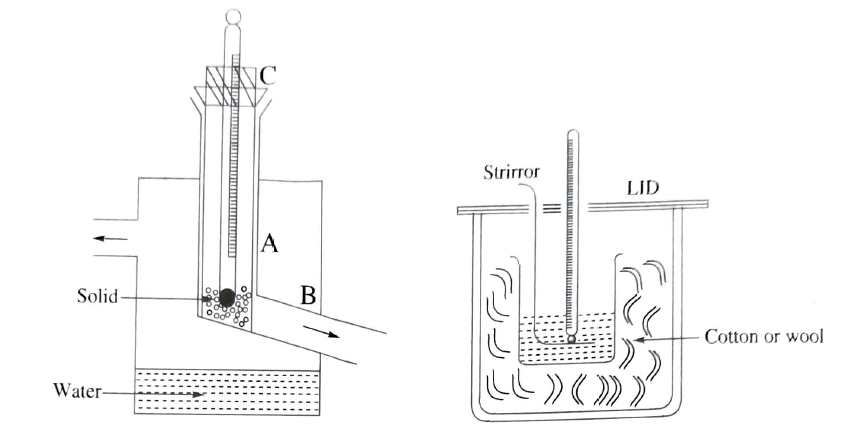

The specific heat of a substance is defined as the quality of heat required o rise the temperature of unit mass of substance through a temperature difference of 10 or 1K.
m=mass of the body in gram
Q=Quality of heat absorbed
(t2-t1)=temperature difference.
\(\therefore s=\frac{Q}{m(t_{2}-t_{1})}Cal\,gm^{-1}\,C^{-1}.\)
Q is measured by method of mixtures by a calorimeter.The principle is,
Heat=lost by hot body=Heat gained by the cold body.
Heat lost by the hot body=mass of body X Specific heat X temperature difference.
Heat gained by the calorimeter and contents=Heat gained by the calorimeter + Heat gained by the water.
=(Water equivalent of calorimeter and contents) X temperature difference.
It is cylindrical copper vessel provided with copper stirrer.To minimize the loss of heat by conduction it is placed in a non conducting wooden enclosure and the space between the enclosure and the calorimeter is filled with dry cotton or wool.To minimize the radiation loss, the outer surface of the calorimeter is brightly polished.Lid is provided to minimize the loss of heat due to convection.
It consists of a fixed metal tube AB bent at an obtuse angle.It is inside a cylindrical vessel.In the vertical part A of the tube another tube C is introduced. On account of the obtuse bending of the tube AB the tube 'C' can hold the solid in it and when C is raised or rotated the solid pieces fall from AB.
The masses correct to centigram and determined using physical balance.
The mass W1 gm of the clean,dry and well polished empty calorimeter with stirrer in it is determined. Water is taken upto two thirds of the calorimeter and mass W2 gm of the calorimeter with water is determined. Placed the calorimeter in the non conducting enclosure.Note the intial temperature t10C of the water in the calorimeter by means of a sensitive thermometer.
Mean while heat the solid in the egnault steam heater.When the temperature of the hot solid is steady, note the temperature t20C of the solid.Place the calorimeter just below the spout 'B' of the heater and drop the solid pieces into the calorimeter.Stir the contents of the calorimeter and note the resultant temperature and finally find the mass W3 gm of the calorimeter with the contents in it.Tabulate the radings and determine the specific heat of the solid from the equation
\(s=\frac{[w_{1}s_{1}+(w_{2}-w_{1})s_{2}](t_{3}-t_{1})}{(w_{3}-w_{2})(t_{2}-t_{3})}cal/g^{0}C \)